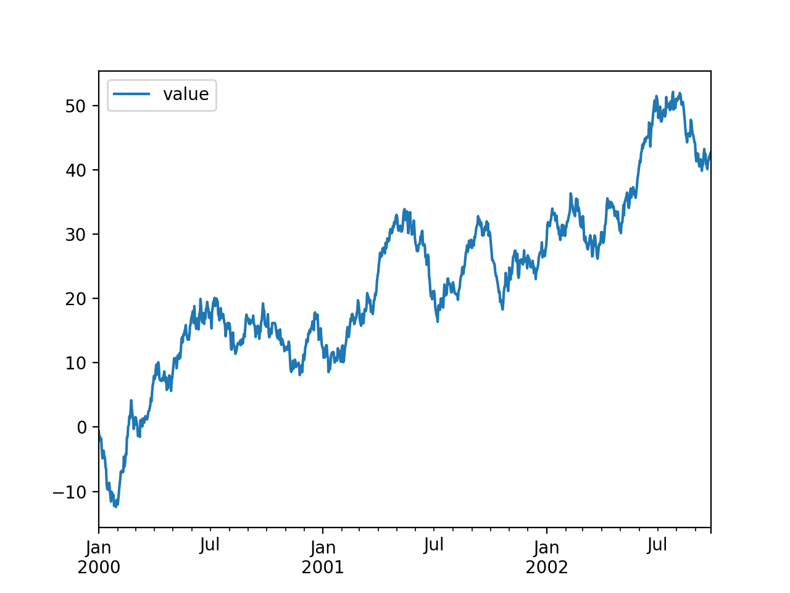

View the corresponding python.Rmd file.
In this example, we’re using the continuumio/anaconda3 docker image to run Python.
Python 3.6.1 |Anaconda 4.4.0 (64-bit)| (default, May 11 2017, 13:09:58)
[GCC 4.4.7 20120313 (Red Hat 4.4.7-1)] on linux
Type "help", "copyright", "credits" or "license" for more information.
>>> import pandas as pd
>>> import matplotlib
>>>
>>> matplotlib.use('agg')
>>> pd.__version__
'0.20.1'
Because knitractive employs the tmuxr package under the hood, the python session is maintained, and we can continue where we left off.
>>> ts = pd.DataFrame({"value": pd.np.random.randn(1000)},
... index=pd.date_range('1/1/2000',
... periods=1000))
>>> ts = ts.cumsum()
>>> ts.head()
| value | |
|---|---|
| 2000-01-01 | 0.666958 |
| 2000-01-02 | 0.239634 |
| 2000-01-03 | -1.235195 |
| 2000-01-04 | -0.941780 |
| 2000-01-05 | -0.188111 |
We’ve mapped the current working directory on the host to the directory /data/ inside the docker container, so that we can include generated figures.
>>> ts.plot()
